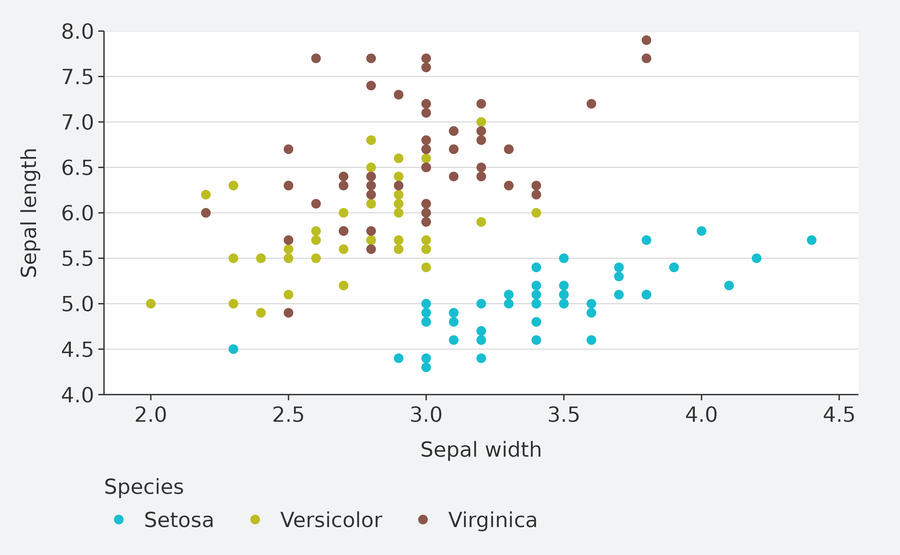
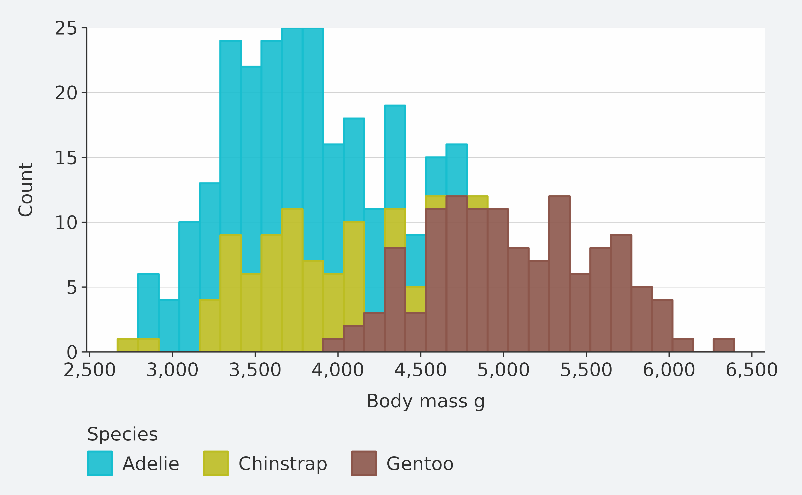
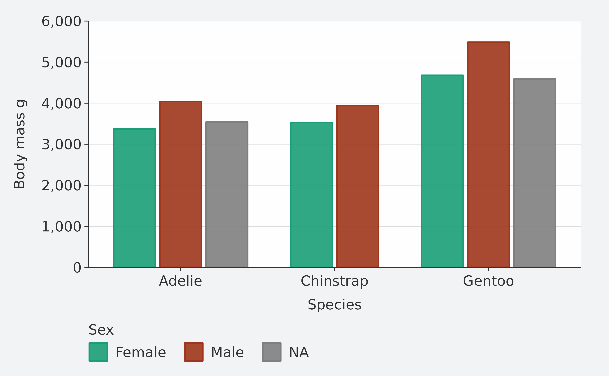
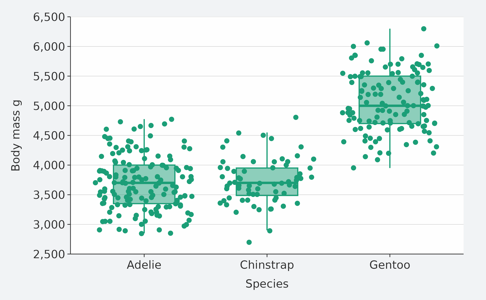
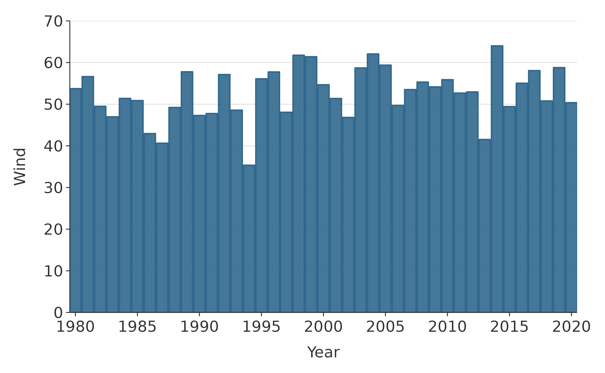
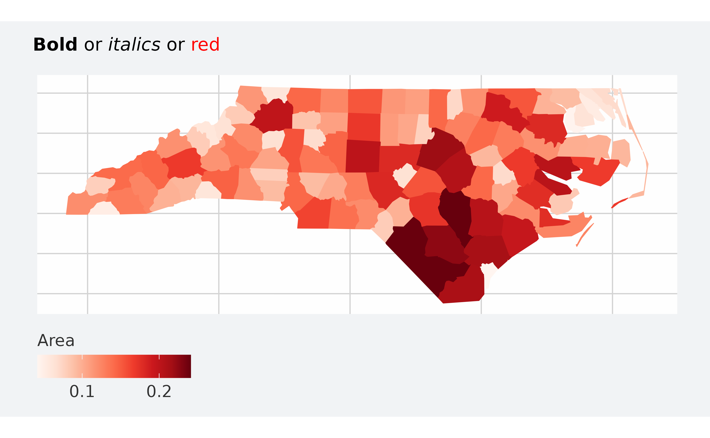
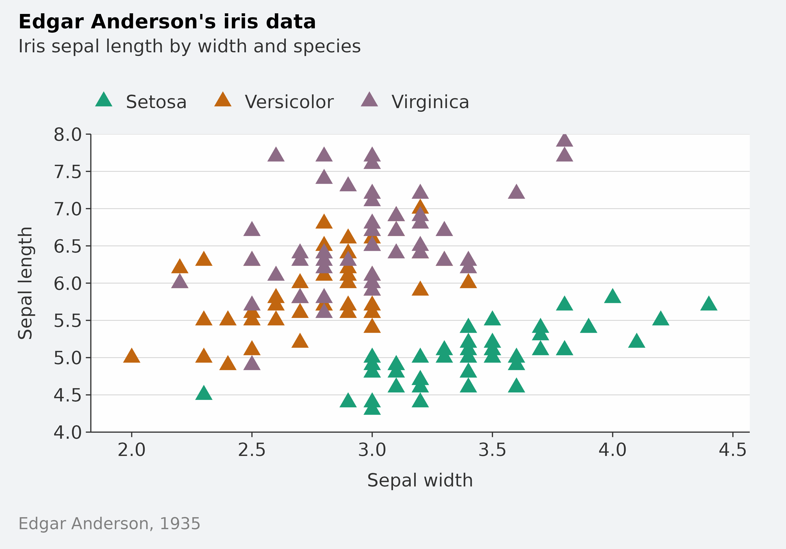
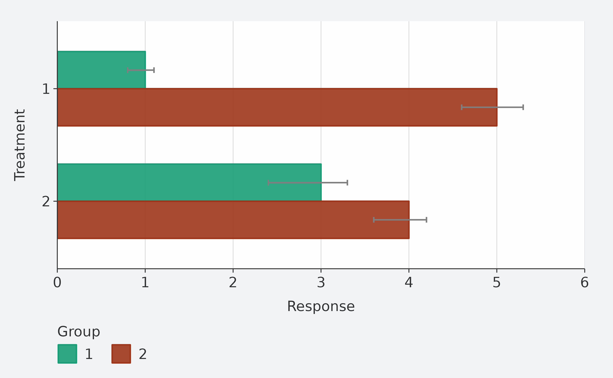
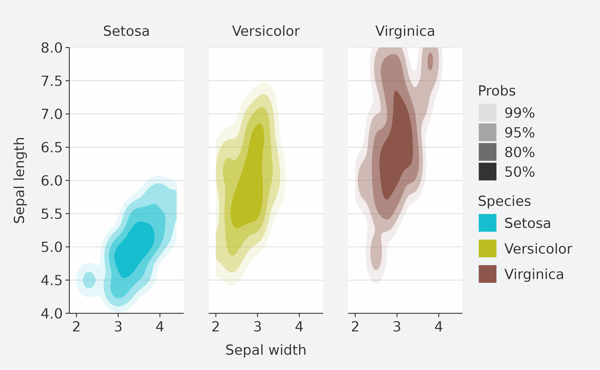

Overview
ggblanket is a package of wrapper functions around the fantastic ggplot2 package.
The primary objective is to simplify ggplot2 visualisation.
Secondary objectives relate to:
- Scope: cover the most useful 80% of what ggplot2 does
- Design: produce well-designed visualisation by default
- Alignment: use conventions generally aligned with ggplot2.
It is intended to be useful for all levels of experience from beginner to expert.
How it works
To simplify ggplot2 visualisation, the ggblanket package provides:
-
gg_*wrapper functions to plot a single geom - A single
colargument to colour and fill by a variable - A
facetargument to facet by a variable - An additional
facet2argument to facet by a second variable - A
palargument to customise colours - Prefixed arguments to customise scales, guides, titles and faceting
- Default titles converted with
snakecase::to_sentence - Numeric limits that default to the min and max break
- Horizontal plots with y labels in order etc
- A
palthat generally inherits to subsequent geoms - Access to other
geom_*arguments via... - A
themeargument to customise the look and feel - A
gg_themefunction to create a quick theme - A base from which to create custom plot functions with your own defaults
- Control over
plotly::ggplotlytooltips withadd_tooltip_text
1. gg_* wrapper functions to plot a single geom
These gg_*functions each wrap a ggplot2 ggplot(aes(...)) function with the applicable ggplot2 geom_*() function.
All aesthetics (other than text) are within the ggplot function, and therefore will inherit to any subsequent geom’s added by default.
Always pipe in your data, so that you can access variable names from the Rstudio autocomplete.
iris |>
mutate(Species = str_to_sentence(Species)) |>
gg_point(
x = Sepal.Width,
y = Sepal.Length,
col = Species)
2.A single col argument to colour and fill by a variable
{ggblanket} merges the col and fill aesthetics of ggplot2 into one concept represented by the col argument. In ggplot2 language, this argument always represents both col and fill.
penguins |>
gg_histogram(
x = body_mass_g,
col = species) 
3. A facet argument to facet by a variable
faceting is treated essentially as if it were an aesthetic, where users just provide an unquoted variable to facet by.
If a single facet (or facet2) variable is provided, it’ll default to a “wrap” layout. But you can change this with a facet_layout = "grid" argument.
penguins |>
tidyr::drop_na(sex) |>
mutate(sex = str_to_sentence(sex)) |>
gg_violin(
x = sex,
y = body_mass_g,
facet = species)
4. An additional facet2 argument to facet by a second variable
A facet2 argument is also provided for extra functionality and flexibility.
If both facetand facet2 variables are provided, then it’ll default to a “grid” layout of facet by facet2. But you can change this with a facet_layout = "wrap" argument.
penguins |>
tidyr::drop_na(sex) |>
mutate(sex = str_to_sentence(sex)) |>
gg_density(
x = flipper_length_mm,
col = sex,
facet = species,
facet2 = island
)5. A pal argument to customise colours
The pal argument allows the users to pick the vector of colours they want.
These arguments work in the same way regardless of whether a col variable is specified or not.
penguins |>
mutate(sex = str_to_sentence(sex)) |>
group_by(species, sex) |>
summarise(body_mass_g = mean(body_mass_g, na.rm = TRUE)) |>
gg_col(
x = species,
y = body_mass_g,
col = sex,
position = position_dodge2(preserve = "single"),
pal = c("#1B9E77", "#9E361B"))
6. Prefixed arguments to customise scales, guides, titles and faceting
These prefixed arguments are designed to work with the Rstudio autocomplete to help you remember and find the adjustment you need.
Determine whether what you want to change relates to x,y, col or facet, and then type this prefix and press the tab key to access the list from autocomplete. Then use arrow keys, and press tab again to select.
Available arguments are:
-
*_breaks: Adjust the breaks of a scale -
*_expand: Adjust the padding beyond the limits on a scale -
*_include: Include a value within a scale -
*_labels: Adjust the labels on the breaks of a scale -
*_limits: Adjust the limits on a scale -
*_trans: Transform a scale (e.g. “log10”, “sqrt” or “reverse”) -
*_title: Add a title -
*_sec_axis: Add a secondary x or y axis -
*_grid: Add or remove a x or y gridline -
col_continuousHow to colour a continuous variable (e.g. “steps”) -
col_rescale: Rescale a continuous col variable non-linearly -
col_legend_place: Place to put the legend (e.g. “r”) -
col_legend_ncol: Number of columns to arrange legend elements into -
col_legend_nrow: Number of rows to arrange legend elements into -
col_legend_rev: Whether to reverse the legend -
facet_layout: Whether the layout is to be “wrap” or “grid” -
facet_scales: How facet scales are to be treated -
facet_space: Whether facet space is to be allocated proportionally -
facet_ncol: How many columns to wrap facets into
-
facet_nrow: How many rows to wrap facets into
penguins |>
gg_jitter(
x = species,
y = body_mass_g,
col = flipper_length_mm,
col_continuous = "steps",
y_include = 0,
y_trans = "sqrt",
y_breaks = scales::breaks_width(1500),
y_labels = scales::label_number()
)
7. Default titles converted with snakecase::to_sentence
This will make quicker to get to a plot that has titles that are good for external people to see, and will often work nicely for your snakecase column names.
For titles that you need to change manually, you can change manually using x_title, y_title, or col_title.
To remove titles, you can use x_title = "" within the gg_* function and equivalent for the y and col titles.
penguins |>
group_by(species, sex) |>
summarise(across(flipper_length_mm, ~ round(mean(.x, na.rm = TRUE)), 0)) |>
gg_tile(
x = sex,
y = species,
col = flipper_length_mm,
width = 0.9,
height = 0.9,
pal = rev(pals::brewer.rdbu(9)),
col_legend_place = "r",
col_rescale = c(186, 215, 222),
x_labels = snakecase::to_sentence_case,
title = "Average penguin body mass",
subtitle = "Palmer Archipelago, Antarctica",
theme = gg_theme(plot_background_pal = "white",
axis_line_pal = "white",
axis_ticks_pal = "white")) +
geom_text(aes(label = flipper_length_mm), col = "#232323", size = 3.5) 8. Numeric limits that default to the min and max break
The default x and y scales have been designed to create symmetry.
If the y is numeric, the y limits will default to the max of the y breaks with zero y expanding. It will do similar with the x scale, if y is character/factor/logical and x is numeric.
To revert to the min/max of the data, use *_limits = c(NA, NA) or *_limits = c(lubridate::NA_Date_, lubridate::NA_Date_).
storms |>
group_by(year) |>
filter(between(year, 1980, 2020)) |>
summarise(wind = mean(wind, na.rm = TRUE)) |>
gg_line(
x = year,
y = wind,
x_labels = scales::label_number(big.mark = ""),
y_include = 0,
title = "Storm wind speed",
subtitle = "USA average storm wind speed, 1980\u20132020",
y_title = "Wind speed (knots)",
caption = "Source: NOAA"
) +
geom_point()
9. Horizontal plots with y labels in order etc
When plots are horizontal, ggblanket ensures y labels are in order.
The position of bars, pal colours and legend elements will mostly be in the right order too.
penguins |>
tidyr::drop_na(sex) |>
group_by(species, sex, island) |>
summarise(body_mass_kg = mean(body_mass_g) / 1000) |>
gg_col(
x = body_mass_kg,
y = species,
col = sex,
facet = island,
width = 0.75,
col_labels = snakecase::to_sentence_case,
position = "dodge")
10. A pal that inherits to subsequent geoms
The pal is generally inherited to subsequent geom layers regardless of whether there is a col argument.
It does this because ‘under the hood’, dummy col and fill aesmthetic variables are added, and a colour scale is then added with the legend turned off.
This approach can cause some challenges. These are discussed further in the ‘Multiple geom layers’ section.
Note alpha does not inherit.
penguins |>
gg_boxplot(x = species,
y = body_mass_g,
width = 0.5,
pal = "#1B9E77",
outlier.colour = NA) +
geom_jitter()
11. Access to other geom_* arguments via ...
This relates to all other arguments other than the mapping argument with aesthetics.
Common arguments to add are size, linewidth and width. All arguments and can be identified through the help on the relevant ggplot2::geom_* function.
penguins |>
tidyr::drop_na(sex) |>
gg_smooth(
x = flipper_length_mm,
y = body_mass_g,
col = sex,
size = 0.5,
level = 0.99,
col_legend_place = "t",
col_title = "",
col_labels = snakecase::to_sentence_case
) 
12. A theme argument to customise the look and feel
This allows you to utilise the simplicity of ggblanket, while making content that has your required look and feel.
By using the theme argument, your theme will control all theme aspects, but with some magic relating to the legend and gridline removal within the gg_* function.
This is why:
- the
col_legend_placeargument will work regardless of the theme provided to thethemeargument and - a theme with gridlines in both directions can be provided so that you get generally appropriate gridlines automatically (e.g. vertical gridlines for horizontal bar plots).
However… if you do not want any magic and want your theme to adjust everything, then just add your theme as a layer instead (e.g.+ theme_grey()).
penguins |>
mutate(sex = str_to_sentence(sex)) |>
gg_point(x = bill_depth_mm,
y = bill_length_mm,
col = sex,
facet = species,
pal = c("#1B9E77", "#9E361B"),
theme = theme_grey())
13. A gg_theme function to create a quick theme
The gg_theme function allows you to modify the default theme by changing text size, colours, margins, among other.
It includes arguments for adjusting text, background colours, axis lines, ticks and gridlines.
There is also a void = TRUE argument that is useful for maps.
storms |>
group_by(year) |>
filter(between(year, 1980, 2020)) |>
summarise(wind = mean(wind, na.rm = TRUE)) |>
gg_col(
x = year,
y = wind,
x_labels = scales::label_comma(big.mark = ""),
x_expand = c(0, 0),
width = 0.75,
theme = gg_theme(
text_size = 11,
plot_background_pal = "white",
panel_background_pal = "white"))
14. A base from which to create custom plot functions with your own defaults
You can easily create powerful custom functions. This is because the ... argument can allow you to access all arguments within the ggblanket gg_* function (and applicable ggplot2::geom_* function).
gg_point_custom <- function(data, x, y, col,
size = 3,
shape = 17,
pal = pals::brewer.dark2(9),
col_title = "",
col_legend_place = "t",
...) {
data |>
gg_point(x = {{ x }}, y = {{ y }}, col = {{col}},
size = size,
shape = shape,
pal = pal,
col_title = col_title,
col_legend_place = col_legend_place,
...)
}
iris |>
mutate(Species = str_to_sentence(Species)) |>
gg_point_custom(
x = Sepal.Width,
y = Sepal.Length,
col = Species,
title = "Edgar Anderson's iris data",
subtitle = "Iris sepal length by width and species",
caption = "Edgar Anderson, 1935"
)
15. Control over plotly::ggplotly tooltips with add_tooltip_text
The add_tooltip_text function allows users to create nice tooltips in combination with the gg_*() text argument, and the tooltip = "text" argument in ggplotly.
theme_custom <- gg_theme(
"helvetica",
plot_background_pal = "white",
panel_background_pal = "white",
)
iris |>
mutate(Species = str_to_sentence(Species)) |>
add_tooltip_text(titles = snakecase::to_sentence_case) |>
gg_point(
x = Sepal.Width,
y = Sepal.Length,
col = Species,
text = text,
col_legend_place = "r",
theme = theme_custom) |>
plotly::ggplotly(tooltip = "text")
Multiple geom layers
For all plots with multiple geom’s, you will need to think about if there is any desired drawing order you want, and if so choose the gg_* function that permits this order.
For plots where some geoms have acol aesthetic and some do not, you must choose a gg_* function that relates to one of the layers with a col argument. Or, if this conflicts with the desired drawing order, then choose gg_blank (i.e. with the col argument). The reason for this is that ggblanket under the hood creates a dummy colour scale for when there is no col argument.
Once you know what gg_* function you are going to use, then you might need to use the *_include argument to adjust the x or y scale if it will not include all of the range needed by subsequent layers.
If subsequent layers do not require all of the aesthetics from the gg_* function, use the inherit.aes = FALSE argument in the geom_* function.
For example, to make a coloured column graph with grey error bars, use the gg_col function as this layer has a col aesthetic and the drawing order means it should be underneath the errorbars.
df <- data.frame(
trt = factor(c(1, 1, 2, 2)),
resp = c(1, 5, 3, 4),
group = factor(c(1, 2, 1, 2)),
upper = c(1.1, 5.3, 3.3, 4.2),
lower = c(0.8, 4.6, 2.4, 3.6)
)
df %>%
gg_col(
x = trt,
y = resp,
col = group,
position = "dodge",
y_include = max(df$upper)
) +
geom_errorbar(
aes(x = trt, ymin = lower, ymax = upper, group = group),
inherit.aes = FALSE,
col = "#7F7F7F",
position = position_dodge(width = 0.9),
width = 0.1
)
Other challenges
gg_* functions do not directly support aesthetics of alpha, size, linewidth, shape, and linetype. However, you could use gg_blank in addition to a col argument, and then add the title of your new aesthetic to align with the col_title.
penguins |>
gg_blank(x = flipper_length_mm, y = body_mass_g, col = species) +
geom_point(aes(shape = species)) +
labs(shape = "Species")
ggblanket keeps x and y out-of-bound values (i.e. it uses scales::oob_keep under the hood). However, you can zoom in using coord = coord_cartesian(xlim = ..., ylim = ...) (or by filtering the data).
penguins %>%
gg_point(
x = flipper_length_mm,
y = body_mass_g,
coord = coord_cartesian(xlim = c(190, 200)),
x_breaks = scales::breaks_width(2))
For some ggplot2 functionality unsupported by ggblanket, you can add the applicable ggplot2 layer to your ggblanket code. For example, using + facet_grid(..., switch = "y").
penguins |>
tidyr::drop_na() |>
mutate(sex = str_to_sentence(sex)) |>
gg_jitter(
x = sex,
y = body_mass_g,
col = sex,
size = 1,
x_title = "",
y_limits = c(NA, NA)) +
facet_grid(cols = vars(species),
rows = vars(island),
switch = "y")
Some other functionality is not supported in ggblanket. You cannon access non-default computed variables. Some geom’s are not supported (e.g. geom_contour, geom_density_2d). You also cannot colour by a date, datetime or time variable. In these situations you will need to use ggplot2.
diamonds |>
ggplot() +
geom_density2d(aes(x = carat, y = price, colour = after_stat(level))) +
scale_colour_gradientn(colours = viridis::viridis(9)) +
scale_y_continuous(expand = c(0, 0), limits = c(0, 6000)) +
labs(x = "Carat", y = "Price", colour = "Level") +
gg_theme() +
theme(panel.grid.major.x = element_blank()) +
theme(legend.position = "right") +
theme(legend.direction = "vertical")